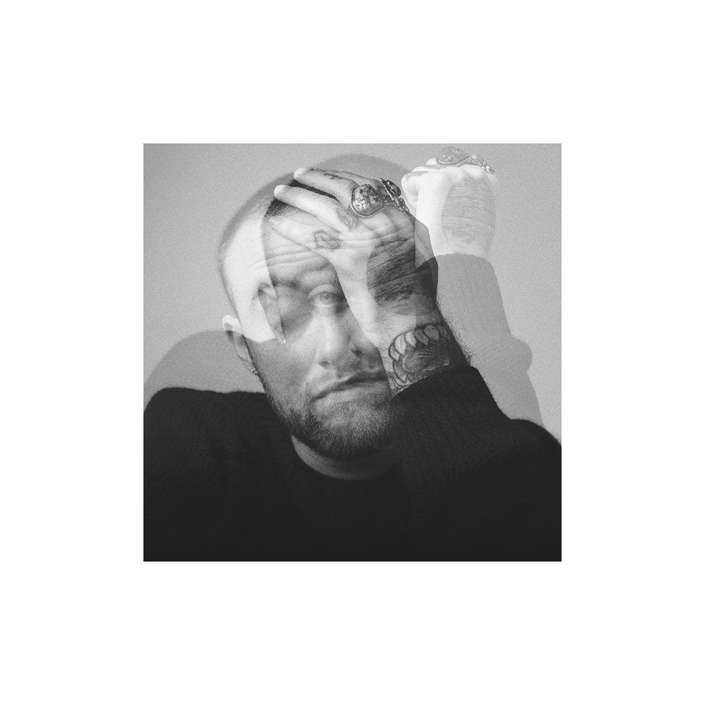

Mac Miller's Gallery


Born in Pittsburgh, Pennsylvania.
Releases him first track: "But My Mackin A'int Easy".
Releases the album K.I.D.S.
Releases the mixtape: "Best Day Ever".
Releases the mixtape: "I Love Life, Thank You".
Release him first studio album: "Blue Slide Park"
Release him second album : "Watching Movies With The Sound Off".
Releases the mixtape: "Faces".
Releases him third album : "GO:OD AM".
Releases him fourth album : "The divine Feminine".
Releases him fifth album : "Swimming".
Mac is found dead in his Los Angeles home.
His sixth studio album and first posthumous album was released : "Circles".
Malcolm James McCormick (Pittsburgh, January 19, 1992 - Los Angeles, September 7, 2018), known by his stage name Mac Miller, was an American rapper, singer and songwriter.
Of Jewish descent, he attended Taylor Allderdice High School, where Wiz Khalifa also left. Before his solo career, he was part of a pop group called The Ill Spoken, with another Pittsburg singer named Beedie. Before signing with Rostrum, in his teens, Mac Miller's name was "Easy Mac." When he turned 18, he signed a contract with Rostrum Records. On March 29, 2011, Mac Miller released an EP called On And On And Beyond, a six-track work produced by Rostrum Records, and then Best Day Ever, another successful EP. On November 8, 2011, Mac Miller released the album Blue Slide Park. The album took the number one spot on Billboard's bestsellers, selling 144,000 in its debut week. On January 19, 2012, a theme song by the group Cobra Starship featuring Mac was released, "Middle Finger". In 2013, he participated in the film Scary Movie 5, acting against American rapper Snoop Dogg.
Mac Miller dated singer Ariana Grande between September 2016 and May 2018. She confirmed that she was in a relationship with Mac in an interview on "The Ellen DeGeneres Show." Following the declaration, Miller and Grande released Favorite Part" on YouTube. Even before they got engaged, Mac Miller participated in Ariana's single "The Way" in 2013. Three years later - and already as boyfriends - Ariana lent her voice to the song "My Favorite Part," which is included on the singer's 4th album, The Divine Feminine. In 2018, he released his last album in life, titled Swimming.
On September 7, 2018, the website TMZ reported that Mac Miller had died, a victim of a drug overdose, at his home in the San Fernando Valley area of northwest Los Angeles, California, in the United States. The coroner's report that examined his death proved that the singer died of an overdose of cocaine and fentanyl, found in his blood. The rapper has always been open about his struggle with drug addiction. In 2019, it was found that it turned out that the sales dealer was the one who had sold the wrong drugs after all, which caused the artist's subsequent demise.